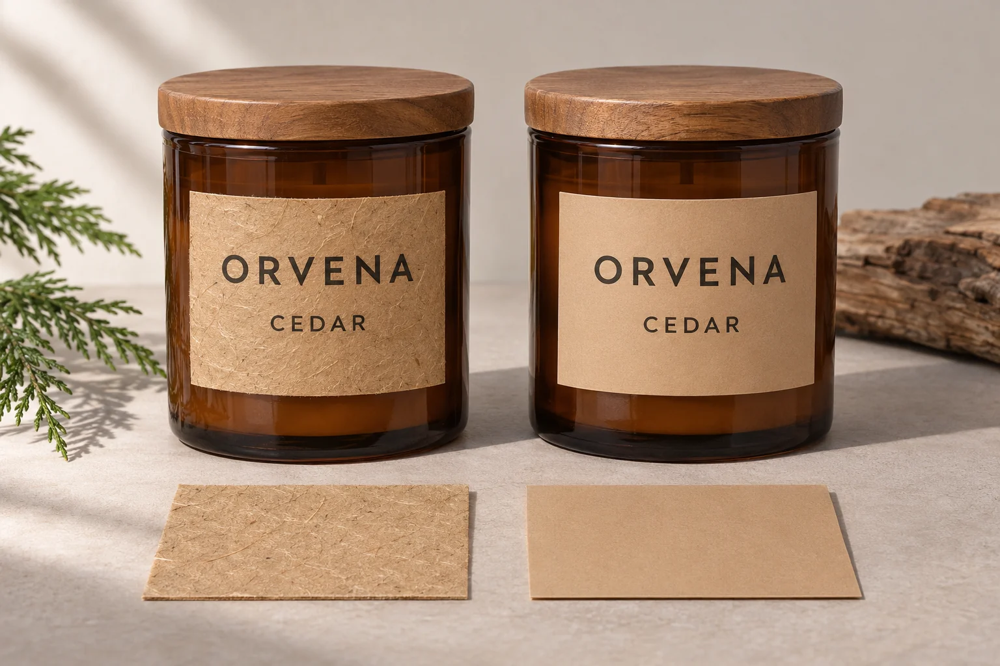

Start with the candle container
Glass jars, amber jars, ceramic jars and metal tins each create a different label effect. A label that looks premium on clear glass may feel too quiet on a dark tin, while a kraft or textured look may suit natural soy wax and gift packaging better.
Finish options by brand style
Good for luxury candle labels, holiday collections and gift boxes when the brand wants a more premium shelf presence.
Useful for glass jars when the buyer wants the candle color or jar material to remain visible.
Works well for minimal, spa, wellness and boutique home fragrance lines.
Are kraft paper candle jar labels waterproof?
Plan for ordinary uncoated kraft paper to absorb moisture. If a candle jar will regularly be handled with damp hands, wiped down or stored where condensation forms, compare a printed kraft-look film with the actual paper before approving the order. If the jar stays dry and the paper texture is part of the design, start with real kraft. A protective finish can change the appearance and the way the surface handles moisture. Ask for evidence on the complete printed label, including its cut edges.
Avery’s brown kraft product guide describes its standard kraft stickers as moisture absorbent. Its blank label comparison lists a specific brown kraft grade as splash proof. That difference is a reason to get the exact material and its rated conditions in writing. Use the label materials guide if you also need to compare film families or separate moisture exposure from oil contact.

Decide which parts of the pack actually need the kraft finish
- Real kraft on the jar. Evaluate this first if dry shelf storage is the expected use and customers should feel the paper. Check the actual printed color and readability against the jar.
- Kraft-look film on the jar. Ask whether the converter can reproduce the brown tone and matte appearance on a film construction if handling regularly introduces moisture. Compare it with an approved paper swatch. The printed look will not reproduce the paper fibers.
- Kraft on a dry box, a separate construction on the jar. Consider this if the textured appearance matters during unboxing but the jar has different exposure. Match color and type on physical samples of both surfaces. Keep required jar information in its approved position.
Write a sample brief the supplier can answer
- Record the jar and the event. Include the exact glass or coating, label dimensions and position, and when moisture reaches the label. Distinguish moisture on the jar before application from exposure after application. Use an unlit sample for this review.
- Identify both samples. Ask for the face material, adhesive, ink and finish for each proposal. Use the same jar and artwork, and agree on the application and exposure method with the supplier. Retain a dry reference and note any differences between the samples.
- Agree what the buyer must still be able to see. After the agreed exposure, compare color, print legibility and edge appearance with the dry reference. Record the accepted sample and the event it covers. For example, the brand may accept a small color shift on a decorative panel but require the product name and care copy to remain clear.
Hold the affected option if the sample uses a different jar coating, a paper swatch is the only evidence, or the product information becomes hard to read. If the accepted visual route changes, confirm the revised artwork and material combination before buying the full run. Review candle heat and safety requirements with the people responsible for the complete product as a separate approval.
Plan one system for multiple scents
Many candle brands need the same structure across lavender, vanilla, amber, citrus, rose or seasonal scents. Keeping one label size, typography system and finish makes small batches easier to approve and bulk production easier to scale.
Match jar labels with packaging labels
Candle projects often include front jar labels, lid labels, warning labels, box labels and sealing labels. Planning these pieces together helps avoid mixed colors, inconsistent margins and labels that look unrelated once the product becomes a gift set.
Quote checklist for candle label projects
- Jar, tin, diffuser bottle or box photo
- Label size, lid label size and box label size if needed
- Number of scent names and quantity per scent
- Preferred finish: matte, gloss, foil, clear, kraft or textured look
- Artwork file, logo file or reference product style
- Whether the order needs roll labels or sheet labels
Browse our custom candle and fragrance labels for product examples, or review the digital proof process before approving production.
Buyer FAQ
Which finish is best for luxury candle labels?
Luxury candle labels often use matte laminate, textured paper effects, clear labels or foil details. The best choice depends on jar color, box style, brand tone and budget.
Should candle jar labels and box labels match?
Matching jar labels, lid labels, box labels and sealing labels can make a candle collection look more consistent, especially for gift sets and multiple scent variants.
Planning candle labels for a new collection?
Send your jar photos, label dimensions, exposure notes, preferred kraft appearance and quantities by scent. Ask for the proposed label construction and a sample for your actual jar. The inquiry form prepares a message. Attach files when sending it by email or WhatsApp.
Send Candle Label Details